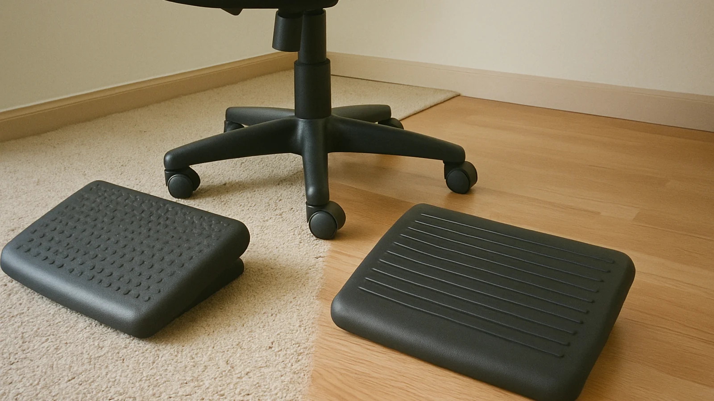

Setup checklist
The Practical Under-Desk Footrest Setup Checklist
A regular, practical desk article for people trying to make foot support feel natural instead of fussy.
Last updated May 23

Footrests are small, but the decision around them is surprisingly personal. Two people can sit at the same desk and need different support because of height, chair settings, shoes, floor surface, and how often they shift during the day. This guide focuses on the everyday checks that make the topic less confusing.
1. Start with the chair
Raise or lower the chair so your forearms can work comfortably, then use the footrest to support the remaining gap.
In a realistic desk routine, this means checking the position while typing, reading, and reaching for items around the desk. If the footrest only works in one posed position, it may not fit the way you actually use the room.
2. Check the distance
The platform should sit close enough that you do not slide forward or point your toes to reach it.
In a realistic desk routine, this means checking the position while typing, reading, and reaching for items around the desk. If the footrest only works in one posed position, it may not fit the way you actually use the room.
3. Notice pressure points
If the front edge of the chair presses into your thighs, lower the footrest or adjust the chair before blaming the product.
In a realistic desk routine, this means checking the position while typing, reading, and reaching for items around the desk. If the footrest only works in one posed position, it may not fit the way you actually use the room.
4. Respect the room
A shared office, bedroom corner, or dorm desk may need quiet materials and a smaller footprint.
In a realistic desk routine, this means checking the position while typing, reading, and reaching for items around the desk. If the footrest only works in one posed position, it may not fit the way you actually use the room.
5. Keep the habit simple
The setup should be easy to reset after cleaning, moving the chair, or switching shoes.
In a realistic desk routine, this means checking the position while typing, reading, and reaching for items around the desk. If the footrest only works in one posed position, it may not fit the way you actually use the room.
Quick checklist
- Your feet reach the support without stretching.
- Your chair can roll back without catching.
- The surface feels comfortable for your usual footwear.
- The footrest does not crowd cables or storage.
- You can clean around it without rearranging the room.
Real-world fit notes before you decide
A footrest belongs in the same mental category as a chair mat, keyboard tray, monitor riser, or task lamp: it only works when it fits the room and the person using it. Before choosing one, sit at the desk at the time of day when you normally feel the most restless. Notice whether your heels are floating, your knees are higher than your hips, your chair is raised only to meet the desk, or your feet keep searching for a chair base. Those little clues are more useful than a generic product promise.
In a home office, the best answer may be a quiet adjustable platform that can stay under the desk without becoming clutter. In a classroom office, reception station, or shared workroom, the better answer may be something wipeable and stable. In a bedroom desk corner, the winner may simply be the footrest that leaves enough room to pull the chair back and vacuum around cords.
Decision criteria that keep the choice practical
- Height range: choose enough lift to support your feet without pushing your knees into the underside of the desk.
- Surface feel: textured plastic, foam, and wood all feel different with shoes, socks, or bare feet.
- Base grip: a sliding footrest becomes irritating quickly, especially on hard floors.
- Movement: rocking can help active sitters, while fixed platforms suit people who want steady support.
- Cleaning: dust and shoe marks are normal under a desk, so complicated grooves may need more attention.
Mistakes worth avoiding
Do not buy only by the tallest setting, because too much height can fold the legs into an awkward angle. Do not buy only by softness, because a cushion that collapses may stop supporting your feet halfway through the day. Do not ignore the chair, because the chair height usually explains why the footrest is needed in the first place. And do not treat a footrest as medical equipment unless a qualified professional has told you to use one for a specific reason.
A calm setup is usually modest: the footrest sits close, the chair stays stable, the desk does not feel crowded, and the user can shift gently without thinking about the accessory. If the product makes you constantly adjust the room around it, keep comparing.
A simple seven-day trial
When a footrest first arrives, do not judge it only in the first ten minutes. Try a simple week-long routine. On the first day, place it close enough that your heels land naturally. On the second day, adjust the height one step and notice whether your shoulders or thighs feel more relaxed. On the third day, test it with the shoes or socks you normally wear at the desk. On the fourth day, move the chair back and forward several times to see whether the footrest interrupts the room. On the fifth day, clean around it and decide whether the design is easy to live with. On the sixth day, use it during a focused work block. On the seventh day, ask whether you forgot about it in a good way.
This trial matters because under-desk accessories often fail through small annoyances rather than obvious defects. A platform can be technically adjustable but too awkward to change. A soft surface can feel pleasant at first but too warm later. A rocking design can feel fun during a break but distracting during careful writing. Slow observation gives you a better answer than a single staged sitting position.
Comparison notes for different users
A shorter user at a fixed-height desk may need more lift and a stable top. A taller user may only want a gentle angle that keeps feet from tucking behind the chair. Someone who takes many video calls may prefer a quiet, fixed platform. Someone who fidgets during reading may enjoy a rocking or textured option. A person in a shared office may care most about neutral styling and easy cleaning, while a home worker may care more about soft feel during relaxed sessions.
The important point is to match the footrest to the actual constraint. If the constraint is dangling feet, height is the priority. If the constraint is restlessness, movement may be useful. If the constraint is a cramped desk, footprint matters more than premium features. If the constraint is floor type, grip and weight may decide the experience.
Final practical note
Good desk comfort is easier to maintain when every item has a clear job. A footrest should support the feet, reduce the temptation to perch on chair legs, and make the chair height feel more natural. If it also keeps the room tidy and easy to reset, it has a much better chance of becoming part of the daily routine.
FAQ
Is a footrest worth considering for desk work?
It can be useful when your feet do not rest flat or when your chair and desk height do not match cleanly.
Should a footrest be soft or firm?
Choose by task: firm support feels stable for typing, while softer foam can be pleasant for short relaxed sessions.
How high should it be?
Start low, then raise it only until your thighs feel supported and your shoulders can stay relaxed.
Can a footrest fix bad posture by itself?
No. It is one part of the setup; chair height, monitor position, breaks, and habits still matter.
What is the easiest mistake to avoid?
Do not place the footrest so far away that you have to reach with your toes or slide forward in the chair.
Related reading
Main under-desk footrest comfort guide
How to Set Footrest Height and Angle Without Overthinking It
Small Desk Footrest Ideas for Tight Offices and Shared Rooms
A Calm Posture Routine for People Who Use an Under-Desk Footrest
Foam, Wood, Rocking, or Adjustable: Which Footrest Feel Fits Your Day?
Common Under-Desk Footrest Mistakes That Make Comfort Worse